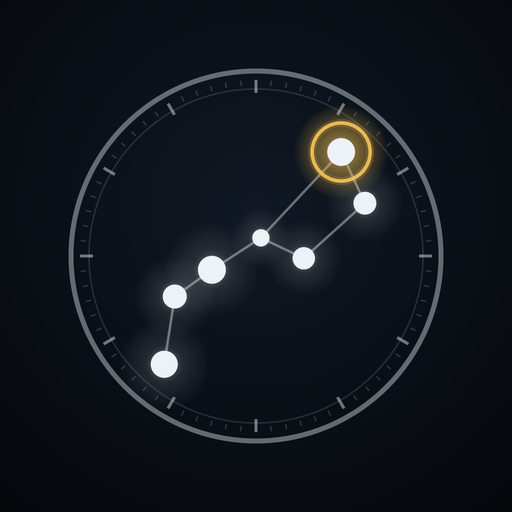
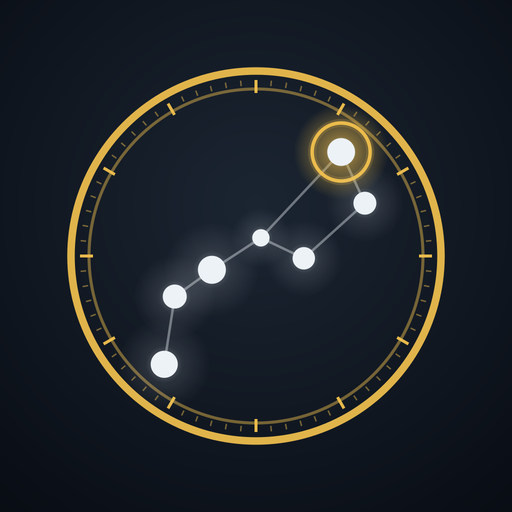

星図とプラネタリウム / Offline planetarium & sky atlas
ご質問・不具合のご連絡は avellsky@gmail.com までお願いします。 返信までに数日いただく場合があります。
iPhone / iPad 版
Mac 版

Astrarium Pro（iPhone / iPad）画面の見かた、操作、流星群の出現数の計算、PNG/PDF 出力まで、実機の画面を添えて 説明しています。Mac 版は右パネルの構成とマウス・トラックパッドの操作に合わせた 別冊です。Pro 版のマニュアルには、人工衛星・AR・オーロラ予報の章が加わります。
観測地と日時を決めれば、その場所・その時刻の空をそのまま描くプラネタリウムです。 天体の位置計算はすべて端末の中で行うため、電波の届かない観測地でも全機能が動きます。 広告・アプリ内課金・アカウント登録はありません（Pro 版は別売のアプリです）。
Astrarium Pro（別アプリ）では、これに人工衛星（ISS・天宮・ Starlink ほか、世界地図と地球儀の表示つき）、AR（カメラ映像に星図を重ねる）、 オーロラ予報が加わります。無料版でも入口は同じ場所にあり、何が増えるのかが 分かるようになっています。
いいえ。観測地メニューから選ぶか、「情報」タブの「観測地を手動で入力」で 緯度・経度を入力すれば、すべての機能を同じように使えます。位置情報は その場所の空を計算するためだけに使い、端末の外へは送信しません。
使えます。星表・暦・計算エンジンをすべて内蔵しています。通信するのは、 彗星・小惑星の軌道要素をご自身でボタンを押して取得するときだけです （Pro 版では、人工衛星の軌道要素とオーロラ予報も同じくボタンを押したときだけ）。
アプリ内の「情報」タブ →「クレジット・出典」に、データセットごとの出典・版・ ライセンス・取得日を掲載しています。
お使いの機種・iOS のバージョン・再現手順を添えてメールでお知らせください。 可能であればスクリーンショットもいただけると助かります。
Questions and bug reports: avellsky@gmail.com. Replies may take a few days.
iPhone and iPad
Mac
Astrarium Pro (iPhone and iPad)
Screen by screen: driving the chart, the meteor-rate model and the printable PNG/PDF export, illustrated with screenshots. The Mac edition is a separate book, written around the docked side panel and the mouse and trackpad. The Pro manual adds chapters on satellites, AR and the aurora forecast.
Choose a place and a time and Astrarium draws that sky. Every position is computed on the device, so the whole app works where there is no signal. No ads, no in-app purchases, no account. (Pro is a separate app.)
Astrarium Pro, a separate app, adds satellites (the ISS, Tiangong, Starlink and more, on the chart, a world map and a globe), AR — the chart drawn over the camera image — and the aurora forecast. The free version keeps the same entry points, so you can see what they are.
No. Pick an observing site from the menus, or open Info → "Enter coordinates manually" and type a latitude and longitude. Location, when granted, is used only to compute the local sky and never leaves the device.
Yes. The catalogues, the ephemeris and the compute engine are all inside the app. It contacts the network only when you press the button that fetches comet and asteroid elements (in Pro, likewise for satellite elements and the aurora forecast).
Info → Credits lists every dataset with its source, version, licence and the date it was retrieved.
Email the device model, the iOS version and how to reproduce it — a screenshot helps.